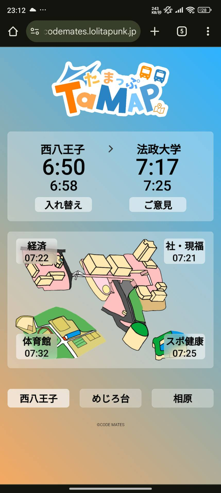
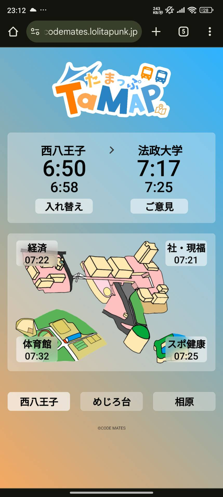

プロジェクト紹介
たまっぷ

たまっぷ（外部サイトにつながります）
「たまっぷ」は「CODE MATES」が最初に開発したWebアプリケーションです。法政大学と最寄り3駅間のバス発着情報を提供するものです。
言語はPythonを使用し、サーバー側ではFlaskを利用しています。ユーザー側では、サーバーから送られたデータを保持しています。また、JavaScriptも使用し、ユーザーの操作に応じ、適切な表示に切り替えています。
たまらぼ

「たまらぼ：通称」は社会問題を解決したい同世代の学生が集うプログラム「チェンジメーカーズラボ in 多摩」です。
「CODE MATES」として、IT技術を駆使して本学周辺地域の利便性向上に貢献したいと考えています。
「たまらぼ」について（法政大学のホームページ）
たまっぷ
 たまっぷ（外部サイトにつながります）「たまっぷ」は「CODE MATES」が最初に開発したWebアプリケーションです。法政大学と最寄り3駅間のバス発着情報を提供するものです。
言語はPythonを使用し、サーバー側ではFlaskを利用しています。ユーザー側では、サーバーから送られたデータを保持しています。また、JavaScriptも使用し、ユーザーの操作に応じ、適切な表示に切り替えています。
たまらぼ
「たまらぼ：通称」は社会問題を解決したい同世代の学生が集うプログラム「チェンジメーカーズラボ in 多摩」です。
「CODE MATES」として、IT技術を駆使して本学周辺地域の利便性向上に貢献したいと考えています。